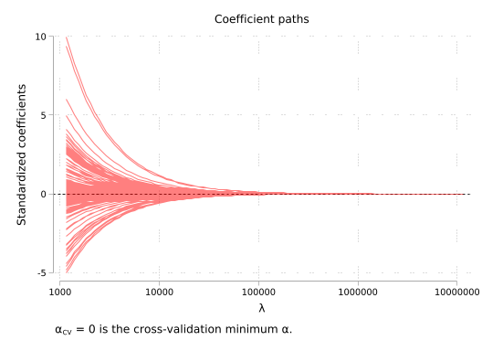
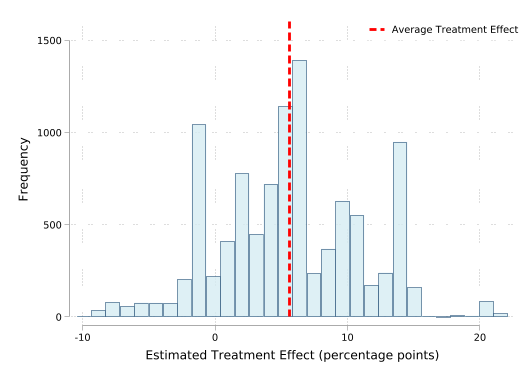
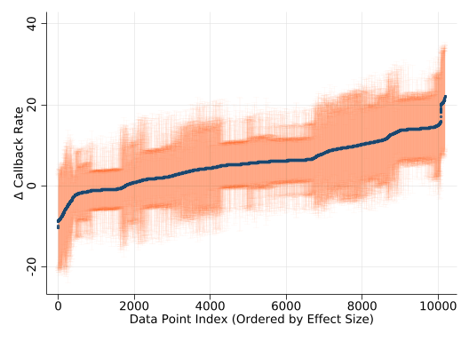
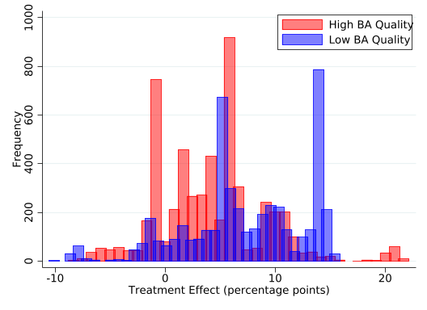
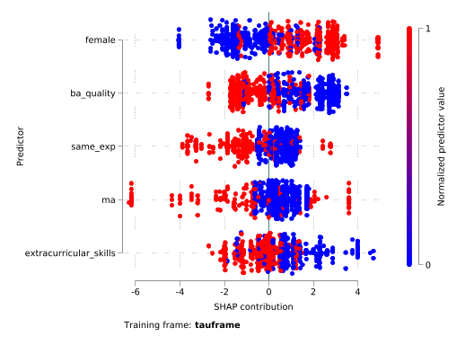

clear all
import delimited "data/Farrell_2015.csv", clear (encoding automatically selected: ISO-8859-2)
(174 vars, 3,120 obs)In this code call-out we explore regularized regression models using data from Farrell (2015), who revisits the NSW job training setting we encountered in Chapter 3 (see code call-out 3.1). While Farrell (2015)’s primary interest is in inference following model selection, here we focus on the basic workings of model selection and penalised regression models, given their importance for call-outs later in this chapter. The data, originally from LaLonde (1986) and Dehejia and Wahba (1999), consist of the NSW experimental sample (nsw == 1) alongside a non-experimental control group drawn from the PSID (nsw == 0). The outcome of interest is earnings in 1978 (y), the treatment indicator is treat, and the dataset contains 10 baseline demographic covariates (v3-v12), together with interactions of continuous variables (v13-v34), interactions of dummy variables (v35-v48), and polynomials up to order five of the continuous covariates (v49-v173). This rich covariate structure, with 173 potential predictors in total, is designed to allow for very flexible functional forms, which is precisely the setting where regularization is most valuable. We focus here entirely on prediction and model selection; Code Call-out 9.2 turns to the causal estimation problem directly.
Let’s get started by opening these data and doing some initial insepection, as well as estimating some baseline (regression) models without regularization.
(encoding automatically selected: ISO-8859-2)
(174 vars, 3,120 obs)With the data in memory we can confirm that it looks how we think it should. We can start by confirming that the experimental sub-sample is identical to that in Dehejia and Wahba (1999),Dehejia and Wahba (2002), which we discussed in code call-out 3.1:
treat | Freq. Percent Cum.
------------+-----------------------------------
0 | 260 58.43 58.43
1 | 185 41.57 100.00
------------+-----------------------------------
Total | 445 100.00We can see here that, similarly to when we inspected the NSW analysis in Chapter 3, the experimental sample consists of 185 treated units and 260 controls. We can also inspect the layout of the non-experimental sample:
treat | Freq. Percent Cum.
------------+-----------------------------------
0 | 2,490 93.08 93.08
1 | 185 6.92 100.00
------------+-----------------------------------
Total | 2,675 100.00In this case, there are 2,675 observations, with the treated group simply being replicated from NSW data, and the remaining 2,490 drawn from the PSID. We can also confirm that we re-create experimental estimates from the NSW training program:
Linear regression Number of obs = 445
F(1, 443) = 7.15
Prob > F = 0.0078
R-squared = 0.0178
Root MSE = 6579.5
------------------------------------------------------------------------------
| Robust
y | Coefficient std. err. t P>|t| [95% conf. interval]
-------------+----------------------------------------------------------------
treat | 1794.342 670.8245 2.67 0.008 475.9486 3112.736
_cons | 4554.801 340.2038 13.39 0.000 3886.187 5223.415
------------------------------------------------------------------------------This is our experimental benchmark, and as we have seen previously suggests that the job training program increases earnings by an average of $1,794 per year.
From now on, however, we will focus on the non-experimental subsample (i.e., individuals with nsw==0). In this case, we will seek to determine which covariates are relevant predictors of wages in the post-treatment period from our large set of potential covariates using regularized regression. Before implementing these models, let’s define the variables we will use. Below we store as a number of locals baseline covariates, interaction terms (between continuous and dummy variables respectively), and polynomials of continuous variables.
We can confirm that the choice of covariates to include is certainly of consequence. If we simply regress the outcome on treatment, we see that the observational sample clearly does not form a good counterfactual. Rather than approximating the experimental effect, we find effects which are both mis-signed and an order of magnitude larger (ie an average decrease of $15,205 in annual earnings for treated individuals).
Linear regression Number of obs = 2,675
F(1, 2673) = 537.36
Prob > F = 0.0000
R-squared = 0.0609
Root MSE = 15152
------------------------------------------------------------------------------
| Robust
y | Coefficient std. err. t P>|t| [95% conf. interval]
-------------+----------------------------------------------------------------
treat | -15204.78 655.9142 -23.18 0.000 -16490.93 -13918.63
_cons | 21553.92 311.785 69.13 0.000 20942.56 22165.29
------------------------------------------------------------------------------We can, however, see that simplying including all possible covariates in this model also appears to not be an ideal solution. When we do this, as we may expect given that we are in essence likely over-fitting our model, the variance of our estimated treatment effect becomes quite large, not letting us rule out the actual experimental treatment effect we estimated earlier, but also quite a large range of other effects.
note: v3 omitted because of collinearity.
note: v4 omitted because of collinearity.
note: v8 omitted because of collinearity.
note: v9 omitted because of collinearity.
Linear regression Number of obs = 2,675
F(167, 2506) = .
Prob > F = .
R-squared = 0.6874
Root MSE = 9028.8
------------------------------------------------------------------------------
| Robust
y | Coefficient std. err. t P>|t| [95% conf. interval]
-------------+----------------------------------------------------------------
treat | 83.16417 933.4516 0.09 0.929 -1747.251 1913.58
v3 | 0 (omitted)
v4 | 0 (omitted)
v5 | 151.6623 3915.343 0.04 0.969 -7525.977 7829.302
v6 | -1788.133 2775.19 -0.64 0.519 -7230.034 3653.767
v7 | 358.0089 1301.305 0.28 0.783 -2193.735 2909.753
v8 | 0 (omitted)
v9 | 0 (omitted)
v10 | 16610.47 11950.49 1.39 0.165 -6823.372 40044.31
v11 | 681.6246 3843.224 0.18 0.859 -6854.596 8217.845
v12 | -8767.059 4619.227 -1.90 0.058 -17824.95 290.835
v13 | 1826.115 1968.662 0.93 0.354 -2034.258 5686.487
v14 | 305.0906 1845.292 0.17 0.869 -3313.364 3923.545
v15 | 1230.578 1004.913 1.22 0.221 -739.967 3201.123
v16 | -874.1246 455.5494 -1.92 0.055 -1767.416 19.16722
(output omitted)
v169 | 224837 53496.04 4.20 0.000 119936.1 329738
v170 | -29179.86 9788.164 -2.98 0.003 -48373.58 -9986.138
v171 | -40788.65 13025.43 -3.13 0.002 -66330.35 -15246.95
v172 | -124324.1 46024.21 -2.70 0.007 -214573.4 -34074.7
v173 | 37485.28 9322.151 4.02 0.000 19205.37 55765.19
_cons | 48101.05 8368.783 5.75 0.000 31690.61 64511.48
------------------------------------------------------------------------------Let’s begin exploring regularised regression models which should guard against over-fitting, while at the same time including relevant covariates. We will begin by working with the Lasso here (the ‘Least Absolute Shrinkage and Selection Operator’), and below consider some alternative forms of regularized regression models. As we lay out in Chapter 9, this consists of estimating the following: \[ \underset{\beta}{\text{argmin}}\left\{\sum_{i=1}^N(Y_i-X^\prime\beta)^2+\lambda(||\beta||_1)\right\} \tag{1}\] The \(\ell_1\) penalty drives some coefficients to exactly zero, making Lasso a tool for both estimation and variable selection. The strength of regularization is controlled by \(\lambda\): larger values shrink more coefficients to zero, yielding a sparser model.
In general, it is very important to note that the precise implementation of Lasso algorithms differs between languages, with slight differences in the way colinearity is handled, standardisation of variables, convergence tolerance of algorithms, and how intercepts are incorporated. Thus, unless very explicit defaults are set, we will not necessarily observe precise reproducibility across languages. Nevertheless, we should expect broad patterns to be very similar.
We can see the way that penalisation in Equation 1 works by incorporating an arbitrary penalisation value for Lambda. To run the Lasso in Stata with our data we can use the command lasso linear, including the dependent variable and all the covariates in our model. Selecting an arbitrary lambda can be done using the selection(none) option of Lasso command, in which case the Lasso is estimated for all possible lambdas across a grid of values (up to some stopping limit). Once these have been estimated, we can impose any value of lambda we desire, which we arbitarily set as 10 below:
* Lasso selection with lambda value of 10.
lasso linear y `covariates' `continuous_interactions' `dummy_interactions' `polynomials' if nsw == 0, selection(none)
lassoselect lambda = 10note: v49 omitted because of collinearity with another variable.
note: v54 omitted because of collinearity with another variable.
note: v69 omitted because of collinearity with another variable.
note: v104 omitted because of collinearity with another variable.
Evaluating up to 100 lambdas in grid ...
Grid value 1: lambda = 11620.7 no. of nonzero coef. = 0
Grid value 2: lambda = 10588.35 no. of nonzero coef. = 1
Grid value 3: lambda = 9647.706 no. of nonzero coef. = 1
Grid value 4: lambda = 8790.631 no. of nonzero coef. = 1
Grid value 5: lambda = 8009.695 no. of nonzero coef. = 1
Grid value 6: lambda = 7298.136 no. of nonzero coef. = 2
Grid value 7: lambda = 6649.79 no. of nonzero coef. = 2
Grid value 8: lambda = 6059.041 no. of nonzero coef. = 2
Grid value 9: lambda = 5520.772 no. of nonzero coef. = 2
Grid value 10: lambda = 5030.322 no. of nonzero coef. = 2
Grid value 11: lambda = 4583.442 no. of nonzero coef. = 2
Grid value 12: lambda = 4176.262 no. of nonzero coef. = 2
Grid value 13: lambda = 3805.254 no. of nonzero coef. = 2
Grid value 14: lambda = 3467.206 no. of nonzero coef. = 2
Grid value 15: lambda = 3159.189 no. of nonzero coef. = 2
Grid value 16: lambda = 2878.535 no. of nonzero coef. = 2
Grid value 17: lambda = 2622.814 no. of nonzero coef. = 2
Grid value 18: lambda = 2389.811 no. of nonzero coef. = 3
Grid value 19: lambda = 2177.506 no. of nonzero coef. = 3
Grid value 20: lambda = 1984.063 no. of nonzero coef. = 3
Grid value 21: lambda = 1807.804 no. of nonzero coef. = 3
Grid value 22: lambda = 1647.204 no. of nonzero coef. = 3
Grid value 23: lambda = 1500.871 no. of nonzero coef. = 3
Grid value 24: lambda = 1367.537 no. of nonzero coef. = 3
Grid value 25: lambda = 1246.049 no. of nonzero coef. = 4
Grid value 26: lambda = 1135.354 no. of nonzero coef. = 5
Grid value 27: lambda = 1034.492 no. of nonzero coef. = 6
Grid value 28: lambda = 942.5905 no. of nonzero coef. = 5
Grid value 29: lambda = 858.8534 no. of nonzero coef. = 8
Grid value 30: lambda = 782.5552 no. of nonzero coef. = 8
Grid value 31: lambda = 713.0352 no. of nonzero coef. = 9
Grid value 32: lambda = 649.6911 no. of nonzero coef. = 10
Grid value 33: lambda = 591.9743 no. of nonzero coef. = 11
Grid value 34: lambda = 539.3849 no. of nonzero coef. = 11
Grid value 35: lambda = 491.4675 no. of nonzero coef. = 10
Grid value 36: lambda = 447.8069 no. of nonzero coef. = 12
Grid value 37: lambda = 408.0249 no. of nonzero coef. = 16
Grid value 38: lambda = 371.7771 no. of nonzero coef. = 18
Grid value 39: lambda = 338.7495 no. of nonzero coef. = 20
Grid value 40: lambda = 308.6559 no. of nonzero coef. = 20
Grid value 41: lambda = 281.2358 no. of nonzero coef. = 24
Grid value 42: lambda = 256.2515 no. of nonzero coef. = 29
Grid value 43: lambda = 233.4869 no. of nonzero coef. = 31
Grid value 44: lambda = 212.7445 no. of nonzero coef. = 37
Grid value 45: lambda = 193.8449 no. of nonzero coef. = 35
Grid value 46: lambda = 176.6243 no. of nonzero coef. = 40
Grid value 47: lambda = 160.9334 no. of nonzero coef. = 44
Grid value 48: lambda = 146.6366 no. of nonzero coef. = 46
Grid value 49: lambda = 133.6098 no. of nonzero coef. = 50
Grid value 50: lambda = 121.7402 no. of nonzero coef. = 50
Grid value 51: lambda = 110.9252 no. of nonzero coef. = 53
Grid value 52: lambda = 101.0709 no. of nonzero coef. = 56
Grid value 53: lambda = 92.09203 no. of nonzero coef. = 60
Grid value 54: lambda = 83.91083 no. of nonzero coef. = 60
Grid value 55: lambda = 76.45642 no. of nonzero coef. = 61
Grid value 56: lambda = 69.66424 no. of nonzero coef. = 63
Grid value 57: lambda = 63.47546 no. of nonzero coef. = 69
Grid value 58: lambda = 57.83648 no. of nonzero coef. = 72
Grid value 59: lambda = 52.69845 no. of nonzero coef. = 70
Grid value 60: lambda = 48.01686 no. of nonzero coef. = 72
Grid value 61: lambda = 43.75118 no. of nonzero coef. = 74
Grid value 62: lambda = 39.86444 no. of nonzero coef. = 77
Grid value 63: lambda = 36.32299 no. of nonzero coef. = 81
Grid value 64: lambda = 33.09616 no. of nonzero coef. = 80
Grid value 65: lambda = 30.15599 no. of nonzero coef. = 81
Grid value 66: lambda = 27.47701 no. of nonzero coef. = 81
Grid value 67: lambda = 25.03603 no. of nonzero coef. = 81
Grid value 68: lambda = 22.8119 no. of nonzero coef. = 84
Grid value 69: lambda = 20.78535 no. of nonzero coef. = 86
Grid value 70: lambda = 18.93884 no. of nonzero coef. = 85
Grid value 71: lambda = 17.25637 no. of nonzero coef. = 88
Grid value 72: lambda = 15.72336 no. of nonzero coef. = 91
Grid value 73: lambda = 14.32654 no. of nonzero coef. = 90
Grid value 74: lambda = 13.05381 no. of nonzero coef. = 90
Grid value 75: lambda = 11.89414 no. of nonzero coef. = 89
Grid value 76: lambda = 10.8375 no. of nonzero coef. = 92
Grid value 77: lambda = 9.874727 no. of nonzero coef. = 95
Grid value 78: lambda = 8.997483 no. of nonzero coef. = 97
Grid value 79: lambda = 8.198172 no. of nonzero coef. = 100
Grid value 80: lambda = 7.469869 no. of nonzero coef. = 99
Grid value 81: lambda = 6.806266 no. of nonzero coef. = 101
Grid value 82: lambda = 6.201616 no. of nonzero coef. = 102
Grid value 83: lambda = 5.650682 no. of nonzero coef. = 102
Grid value 84: lambda = 5.148691 no. of nonzero coef. = 102
Grid value 85: lambda = 4.691295 no. of nonzero coef. = 102
Grid value 86: lambda = 4.274533 no. of nonzero coef. = 106
Grid value 87: lambda = 3.894796 no. of nonzero coef. = 106
Grid value 88: lambda = 3.548793 no. of nonzero coef. = 107
Grid value 89: lambda = 3.233528 no. of nonzero coef. = 109
Grid value 90: lambda = 2.94627 no. of nonzero coef. = 109
Grid value 91: lambda = 2.684532 no. of nonzero coef. = 109
Grid value 92: lambda = 2.446045 no. of nonzero coef. = 111
Grid value 93: lambda = 2.228745 no. of nonzero coef. = 116
note: convergence for the lasso penalty = 2.228745 not reached after 100000
iterations; solutions for larger penalty values returned.
Lasso linear model No. of obs = 2,675
No. of covariates = 131
Selection: None
--------------------------------------------------------------------------
| No. of
| nonzero In-sample
ID | Description lambda coef. R-squared BIC
---------+----------------------------------------------------------------
1 | first lambda 11620.7 0 0.0000 59263.74
92 | last lambda 2.446045 111 0.6692 57180.4
--------------------------------------------------------------------------
Note: No lambda selected. lassoselect can be used to select lambda.
ID = 77 lambda = 9.874727 selectednote: v49 omitted because of collinearity with another variable.
note: v54 omitted because of collinearity with another variable.
note: v69 omitted because of collinearity with another variable.
note: v104 omitted because of collinearity with another variable.
Evaluating up to 100 lambdas in grid ...
Grid value 1: lambda = 11620.7 no. of nonzero coef. = 0
Grid value 2: lambda = 10588.35 no. of nonzero coef. = 1
Grid value 3: lambda = 9647.706 no. of nonzero coef. = 1
(output omitted)
Grid value 91: lambda = 2.684532 no. of nonzero coef. = 142
Grid value 92: lambda = 2.446045 no. of nonzero coef. = 142
note: convergence for the lasso penalty = 2.446045 not reached after 100000
iterations; solutions for larger penalty values returned.
Lasso linear model No. of obs = 2,675
No. of covariates = 167
Selection: None
--------------------------------------------------------------------------
| No. of
| nonzero In-sample
ID | Description lambda coef. R-squared BIC
---------+----------------------------------------------------------------
1 | first lambda 11620.7 0 0.0000 59263.74
91 | last lambda 2.684532 142 0.6760 57369.94
--------------------------------------------------------------------------
Note: No lambda selected. lassoselect can be used to select lambda.
ID = 77 lambda = 9.874727 selectedIn this case we see that across the values of lambdas considered, the highest value of lambda is that which increases penalisation on variable inclusion so much that all coefficients are driven to 0, while in the lowest value considered, 142 of the 172 possible selected variables remain in the model. In the case here where we have set lambda to 10, we can see which covariates are retained after the selection process using the command lassocoef.
// Lasso selected variables (with an arbitrary penalty of 10).
lassocoef, display(coef, postselection)
return list
------------------------
| active
-------------+----------
v3 | -386.3368
v4 | 3670.068
v5 | 1013.456
v6 | -113.861
v7 | 280.2256
v8 | 3890.435
v9 | 9535.565
v11 | 397.8436
v50 | 198.9759
v51 | 1936.801
v52 | 297.8481
v55 | 477.1676
v56 | 1683.383
v57 | -286.7935
v58 | 42.41461
v60 | -784.8624
v61 | 1051.723
v62 | -728.8859
v63 | 2953.775
v64 | 241.6899
v65 | -297.9572
v66 | -98.33764
v67 | -428.1419
v68 | 175.6495
v71 | 3808.209
v72 | 2441.481
v73 | 1342.765
v75 | 168.6757
v76 | 2049.213
v77 | -1069.473
v78 | -220.2538
v79 | -1749.043
v80 | 685.4721
v81 | 2946.233
v82 | -2505.877
v83 | -691.1997
v85 | 630.2369
v86 | 3502.143
v87 | 2794.972
v89 | -4332.832
v92 | -3896.144
v93 | 1393.289
v94 | -684.9754
v97 | 2900.321
v98 | -3407.255
v99 | -250.5029
v101 | 898.1095
v102 | 1307.696
v103 | -3552.826
v105 | 192.0273
v106 | -5791.867
v107 | 1676.819
v108 | -1374.134
v109 | -122.5984
v110 | -2152.211
v111 | 386.0804
v112 | 1369.78
v113 | -457.7758
v114 | 965.6832
v116 | 1662.144
v117 | 1703.257
v118 | -13.35993
v119 | -3394.864
v120 | -5015
v121 | -1754.263
v122 | -7532.193
v123 | 1532.869
v125 | -5890.002
v126 | 3097.986
v128 | -6771.665
v129 | 19963.52
v130 | 5239.685
v133 | 4689.764
v135 | -19684.27
v136 | -7699.754
v141 | -8586.593
v142 | 5217.801
v143 | 1298.41
v144 | -6.22905
v145 | 4624.127
v147 | 3766.638
v148 | 3588.548
v149 | -5885.614
v153 | 3833.195
v160 | -1855.753
v161 | -2967.853
v163 | -971.8231
v164 | 1815.75
v165 | 7521.147
v166 | 2719.855
v167 | -673.9219
v170 | 99.84102
v171 | -753.2235
v172 | 11941.2
v173 | -1409.452
_cons | 6512.176
------------------------
Legend:
b - base level
e - empty cell
o - omitted
macros:
r(names) : "."
matrices:
r(coef) : 96 x 1Above we see that when we have imposed a lambda of 10, 122 out of the 172 available covariates are retained in the model. We can also display the coefficients on these covariates, though of course, given the nature of the Lasso, they will be shrunk towards zero. Clearly, this value of 10 does not penalize much, as the majority of considered variables remain in the model. However, if we choose a larger penalty, such as a lambda of 1000 below, we should expect fewer covariates to be selected.
// Selecting an arbitrary penalty of 1000 and visualization of the selected variables.
lassoselect lambda = 1000
lassocoef, display(coef, postselection)ID = 27 lambda = 1034.492 selected
------------------------
| active
-------------+----------
v4 | 8587.304
v8 | 5912.199
v9 | 12625.61
v123 | -1024.177
v126 | 888.0525
v167 | -988.3929
_cons | -2640.083
------------------------
Legend:
b - base level
e - empty cell
o - omittedAs we can see, in this case, only 6 covariates remain in the model. In general (though not necessarily given distinct variable selection), we will also see that the coefficients on selected variables will be closer to zero than in cases with a smaller shrinkage term.
We can view the entire path of coefficients across distinct values of lambda using coefpath. Below we plot these values (requesting coefficients be plotted against lambda in logarithmic scale). We can see the nature of shrinkage with coefficients both moving towards zero, and exiting the model as lambda rises.
Rather than selecting \(\lambda\) arbitrarily, typically it will be selected using cross-validation, or some other optimal selection method. By default, 10 fold cross-validation is used, where lambda is selected to minimise out-of-sample prediction error across 10 sub-samples of data (in code call-out 9.2 below we see such cross-validation implemented “by hand”). Below we do this, again visualising coefficients. In this case, given that folds of data are randomly selected, we set a seed for replicability across runs.
note: v49 omitted because of collinearity with another variable.
note: v54 omitted because of collinearity with another variable.
note: v69 omitted because of collinearity with another variable.
note: v104 omitted because of collinearity with another variable.
10-fold cross-validation with 100 lambdas ...
Grid value 1: lambda = 11620.7 no. of nonzero coef. = 0
Folds: 1...5....10 CVF = 2.43e+08
Grid value 2: lambda = 10588.35 no. of nonzero coef. = 1
Folds: 1...5....10 CVF = 2.22e+08
Grid value 3: lambda = 9647.706 no. of nonzero coef. = 1
Folds: 1...5....10 CVF = 2.03e+08
(output omitted)
Folds: 1...5....10 CVF = 1.01e+08
Grid value 39: lambda = 338.7495 no. of nonzero coef. = 18
Folds: 1...5....10 CVF = 1.01e+08
Grid value 40: lambda = 308.6559 no. of nonzero coef. = 21
Folds: 1...5....10 CVF = 1.02e+08
Grid value 41: lambda = 281.2358 no. of nonzero coef. = 26
Folds: 1...5....10 CVF = 1.02e+08
... cross-validation complete ... minimum found
Lasso linear model No. of obs = 2,675
No. of covariates = 167
Selection: Cross-validation No. of CV folds = 10
--------------------------------------------------------------------------
| No. of Out-of- CV mean
| nonzero sample prediction
ID | Description lambda coef. R-squared error
---------+----------------------------------------------------------------
1 | first lambda 11620.7 0 0.0034 2.43e+08
36 | lambda before 447.8069 17 0.5851 1.01e+08
* 37 | selected lambda 408.0249 16 0.5853 1.01e+08
38 | lambda after 371.7771 18 0.5853 1.01e+08
41 | last lambda 281.2358 26 0.5834 1.02e+08
--------------------------------------------------------------------------
* lambda selected by cross-validation.
------------------------
| active
-------------+----------
v3 | -3147.205
v4 | 4563.078
v8 | 8482.386
v9 | 9755.602
v19 | 622.8856
v22 | 259.0226
v28 | 340.0382
v34 | 2023.004
v40 | -355.0908
v84 | -1080.123
v126 | 129.1074
v137 | -228.6823
v148 | 127.7709
v161 | 514.9708
v163 | -604.2987
v167 | -1046.278
_cons | 3592.964
------------------------
Legend:
b - base level
e - empty cell
o - omittedCross-validation in this case selects \(\lambda \approx 408\), retaining 16 covariates.
Having selected 16 covariates, we can refit the model using OLS with the selected controls. This is referred as Post-Lasso, and it can be used to remove the shrinkage bias introduced by penalisation in the Lasso. If we return to the context of relevance here, namely considering variables which may be relevant to include as controls our observational subsample, we can similarly introduce the selected variables along with our treatment variable of interest. It is worth noting that while we will do this here—to understand some of the working of the Lasso in Stata—this is not a valid way to conduct causal inference with variable selection. While Post-Lasso will remove the shrinkage bias in the estimated coefficients, it does not guard against omitted variable bias if relevant confounders are correlated with treatment but not selected by the outcome Lasso. Post-Double Lasso (Alexandre Belloni, Chernozhukov, and Hansen (2013)), along with other procedures we discuss throughout Chapter 9 of the book, addresses this by running a second Lasso of treatment on all controls, and taking the union of both selected sets before the final OLS step. This is the approach we use directly in Code Call-out 9.2 below.
Nevertheless, if we wish to see how to introduce the selected variables into a post-Lasso procedure, we can do this simply enough using the e(othervars_sel) macro which returns selected variables after Lasso estimation:
// Save selected variables from Lasso above
local selectedVars = e(othervars_sel)
//Incorporate these into an OLS regression along with treat
reg y treat `selectedVars' if nsw == 0, vce(robust)
Linear regression Number of obs = 2,675
F(12, 2662) = 263.44
Prob > F = 0.0000
R-squared = 0.5927
Root MSE = 9999.7
------------------------------------------------------------------------------
| Robust
y | Coefficient std. err. t P>|t| [95% conf. interval]
-------------+----------------------------------------------------------------
treat | -187.5006 857.5022 -0.22 0.827 -1868.939 1493.937
v3 | -2788.686 714.4978 -3.90 0.000 -4189.713 -1387.659
v4 | 5862.024 987.5126 5.94 0.000 3925.654 7798.393
v8 | 6301.325 1384.374 4.55 0.000 3586.768 9015.882
v9 | 12446.95 1508.899 8.25 0.000 9488.213 15405.68
v95 | -297.8094 445.1194 -0.67 0.504 -1170.624 575.0055
v126 | 327.2444 549.7716 0.60 0.552 -750.7783 1405.267
v137 | -480.1982 451.7014 -1.06 0.288 -1365.919 405.5229
v154 | 296.9655 373.8515 0.79 0.427 -436.1033 1030.034
v161 | 705.4271 292.0679 2.42 0.016 132.7242 1278.13
v163 | -551.0568 299.7866 -1.84 0.066 -1138.895 36.78144
v167 | 127.1019 513.6852 0.25 0.805 -880.1606 1134.364
_cons | 2469.598 1264.021 1.95 0.051 -8.964676 4948.161
------------------------------------------------------------------------------With 16 selected covariates the estimated treatment effect is around $910. Interestingly, this is considerably closer to the experimental benchmark of $1,794 than the naive observational estimate, and broadly consistent with the propensity score matching estimates of Dehejia and Wahba (1999) and Dehejia and Wahba (2002), who find effects ranging from $1,473 to $1,691. As in their case, the estimate is not statistically significant.
One concern with cross-validation-based Lasso is that results can vary with the random seed used to assign observations to folds. We can illustrate this by changing the seed:
lasso linear y `covariates' `continuous_interactions' `dummy_interactions' `polynomials' ///
if nsw == 0, selection(cv) rseed(121316)note: v49 omitted because of collinearity with another variable.
note: v54 omitted because of collinearity with another variable.
note: v69 omitted because of collinearity with another variable.
note: v104 omitted because of collinearity with another variable.
10-fold cross-validation with 100 lambdas ...
Grid value 1: lambda = 11620.7 no. of nonzero coef. = 0
Folds: 1...5....10 CVF = 2.43e+08
Grid value 2: lambda = 10588.35 no. of nonzero coef. = 1
Folds: 1...5....10 CVF = 2.22e+08
Grid value 3: lambda = 9647.706 no. of nonzero coef. = 1
Folds: 1...5....10 CVF = 2.03e+08
Grid value 4: lambda = 8790.631 no. of nonzero coef. = 1
Folds: 1...5....10 CVF = 1.87e+08
Grid value 5: lambda = 8009.695 no. of nonzero coef. = 1
Folds: 1...5....10 CVF = 1.74e+08
Grid value 6: lambda = 7298.136 no. of nonzero coef. = 2
Folds: 1...5....10 CVF = 1.63e+08
Grid value 7: lambda = 6649.79 no. of nonzero coef. = 2
Folds: 1...5....10 CVF = 1.53e+08
Grid value 8: lambda = 6059.041 no. of nonzero coef. = 2
Folds: 1...5....10 CVF = 1.45e+08
Grid value 9: lambda = 5520.772 no. of nonzero coef. = 2
Folds: 1...5....10 CVF = 1.39e+08
Grid value 10: lambda = 5030.322 no. of nonzero coef. = 2
Folds: 1...5....10 CVF = 1.33e+08
Grid value 11: lambda = 4583.442 no. of nonzero coef. = 2
Folds: 1...5....10 CVF = 1.28e+08
Grid value 12: lambda = 4176.262 no. of nonzero coef. = 2
Folds: 1...5....10 CVF = 1.25e+08
Grid value 13: lambda = 3805.254 no. of nonzero coef. = 2
Folds: 1...5....10 CVF = 1.21e+08
Grid value 14: lambda = 3467.206 no. of nonzero coef. = 2
Folds: 1...5....10 CVF = 1.19e+08
Grid value 15: lambda = 3159.189 no. of nonzero coef. = 2
Folds: 1...5....10 CVF = 1.16e+08
Grid value 16: lambda = 2878.535 no. of nonzero coef. = 2
Folds: 1...5....10 CVF = 1.15e+08
Grid value 17: lambda = 2622.814 no. of nonzero coef. = 2
Folds: 1...5....10 CVF = 1.13e+08
Grid value 18: lambda = 2389.811 no. of nonzero coef. = 3
Folds: 1...5....10 CVF = 1.12e+08
Grid value 19: lambda = 2177.506 no. of nonzero coef. = 3
Folds: 1...5....10 CVF = 1.10e+08
Grid value 20: lambda = 1984.063 no. of nonzero coef. = 3
Folds: 1...5....10 CVF = 1.09e+08
Grid value 21: lambda = 1807.804 no. of nonzero coef. = 3
Folds: 1...5....10 CVF = 1.08e+08
Grid value 22: lambda = 1647.204 no. of nonzero coef. = 3
Folds: 1...5....10 CVF = 1.07e+08
Grid value 23: lambda = 1500.871 no. of nonzero coef. = 3
Folds: 1...5....10 CVF = 1.06e+08
Grid value 24: lambda = 1367.537 no. of nonzero coef. = 3
Folds: 1...5....10 CVF = 1.06e+08
Grid value 25: lambda = 1246.049 no. of nonzero coef. = 4
Folds: 1...5....10 CVF = 1.05e+08
Grid value 26: lambda = 1135.354 no. of nonzero coef. = 5
Folds: 1...5....10 CVF = 1.05e+08
Grid value 27: lambda = 1034.492 no. of nonzero coef. = 6
Folds: 1...5....10 CVF = 1.04e+08
Grid value 28: lambda = 942.5905 no. of nonzero coef. = 5
Folds: 1...5....10 CVF = 1.04e+08
Grid value 29: lambda = 858.8534 no. of nonzero coef. = 8
Folds: 1...5....10 CVF = 1.04e+08
Grid value 30: lambda = 782.5552 no. of nonzero coef. = 8
Folds: 1...5....10 CVF = 1.03e+08
Grid value 31: lambda = 713.0352 no. of nonzero coef. = 9
Folds: 1...5....10 CVF = 1.03e+08
Grid value 32: lambda = 649.6911 no. of nonzero coef. = 10
Folds: 1...5....10 CVF = 1.03e+08
Grid value 33: lambda = 591.9743 no. of nonzero coef. = 11
Folds: 1...5....10 CVF = 1.03e+08
Grid value 34: lambda = 539.3849 no. of nonzero coef. = 11
Folds: 1...5....10 CVF = 1.03e+08
Grid value 35: lambda = 491.4675 no. of nonzero coef. = 10
Folds: 1...5....10 CVF = 1.02e+08
Grid value 36: lambda = 447.8069 no. of nonzero coef. = 12
Folds: 1...5....10 CVF = 1.02e+08
Grid value 37: lambda = 408.0249 no. of nonzero coef. = 16
Folds: 1...5....10 CVF = 1.02e+08
Grid value 38: lambda = 371.7771 no. of nonzero coef. = 18
Folds: 1...5....10 CVF = 1.02e+08
Grid value 39: lambda = 338.7495 no. of nonzero coef. = 20
Folds: 1...5....10 CVF = 1.02e+08
Grid value 40: lambda = 308.6559 no. of nonzero coef. = 20
Folds: 1...5....10 CVF = 1.03e+08
Grid value 41: lambda = 281.2358 no. of nonzero coef. = 24
Folds: 1...5....10 CVF = 1.09e+08
... cross-validation complete ... minimum found
Lasso linear model No. of obs = 2,675
No. of covariates = 131
Selection: Cross-validation No. of CV folds = 10
--------------------------------------------------------------------------
| No. of Out-of- CV mean
| nonzero sample prediction
ID | Description lambda coef. R-squared error
---------+----------------------------------------------------------------
1 | first lambda 11620.7 0 0.0034 2.43e+08
37 | lambda before 408.0249 16 0.5819 1.02e+08
* 38 | selected lambda 371.7771 18 0.5819 1.02e+08
39 | lambda after 338.7495 20 0.5813 1.02e+08
41 | last lambda 281.2358 24 0.5545 1.09e+08
--------------------------------------------------------------------------
* lambda selected by cross-validation.With seed 121316, cross-validation selects \(\lambda \approx 223\) and retains 35 covariates: a considerably larger set from those selected with seed 1213, implying any procedures relying on variable selection will change. An alternative that avoids this seed-dependence is the plug-in estimator of A. Belloni et al. (2012), which derives \(\lambda\) analytically from the data rather than by minimising a cross-validated objective:
lasso linear y `covariates' `continuous_interactions' `dummy_interactions' `polynomials' ///
if nsw == 0, selection(plugin)note: v49 omitted because of collinearity with another variable.
note: v54 omitted because of collinearity with another variable.
note: v69 omitted because of collinearity with another variable.
note: v104 omitted because of collinearity with another variable.
Computing plugin lambda ...
Iteration 1: lambda = .0829173 no. of nonzero coef. = 3
Iteration 2: lambda = .0829173 no. of nonzero coef. = 3
Lasso linear model No. of obs = 2,675
No. of covariates = 131
Selection: Plugin heteroskedastic
--------------------------------------------------------------------------
| No. of
| nonzero In-sample
ID | Description lambda coef. R-squared BIC
---------+----------------------------------------------------------------
* 1 | selected lambda .0829173 3 0.5733 57009.01
--------------------------------------------------------------------------
* lambda selected by plugin formula assuming heteroskedastic errors.The plug-in method selects fewer covariates and does so deterministically. The trade-off is that it prioritises asymptotically valid inference over predictive accuracy, and can under-select in finite samples. We can compare the selected sets across all three specifications:
qui lasso linear y `covariates' `continuous_interactions' `dummy_interactions' ///
`polynomials' if nsw == 0, selection(cv) rseed(12131627)
estimates store cvseed1
qui lasso linear y `covariates' `continuous_interactions' `dummy_interactions' ///
`polynomials' if nsw == 0, selection(cv) rseed(121316)
estimates store cvseed2
qui lasso linear y `covariates' `continuous_interactions' `dummy_interactions' ///
`polynomials' if nsw == 0, selection(plugin)
estimates store plugin
lassocoef cvseed1 cvseed2 plugin
----------------------------------------------
| cvseed1 cvseed2 plugin
-------------+--------------------------------
v3 | x x
v4 | x x x
v8 | x x x
v9 | x x x
v95 | x x
v126 | x x
v137 | x x
v154 | x x
v161 | x x
v163 | x x
v167 | x x
v5 | x
v6 | x
v7 | x
v50 | x
v84 | x
v139 | x
v148 | x
_cons | x x x
----------------------------------------------
Legend:
b - base level
e - empty cell
o - omitted
x - estimatedThe variation across columns illustrates that the covariates retained, and hence the results which rely on variable selection, can be sensitive to the choice of penalisation method and tuning parameters. This is not a reason to abandon regularized regression, but it does argue for transparency about these choices and points to a benefit of the theoretically grounded plug-in penalty which we examine again in code call-out 9.2.
While Lasso is a leading variable selection method, there are a range of other penalised models we may encounter in our work, and we discuss a couple of these (Ridge regression and the Elastic net), and some key differences, here.
Lasso’s \(\ell_1\) penalty drives coefficients to exactly zero, making it useful for variable selection. Ridge regression replaces this with an \(\ell_2\) penalty: \[ \underset{\beta}{\text{argmin}}\left\{\sum_{i=1}^N(Y_i-X_i^\prime\beta)^2 +\lambda\sum_{j=1}^p\beta_j^2\right\}. \tag{2}\]
This change implies that Ridge Regression penalizes high coefficient values by introducing a penalty that shrinks them towards zero, but never sets them exactly to zero. As a result, this regularization method is not suitable for model selection but is useful in high-dimensional models where overfitting is a concern, also in cases where the number of covariates exceeds the sample size.
To perform Ridge regression, we can use the command elasticnet linear, including the dependent variable and all the covariates in our model. As with Lasso regression, we include a seed to ensure reproducibility. The main difference is that we must indicate the option alpha(0) to indicate that we wish to implemente a Ridge regression (the implications of this will be clearer below, when defining the elastic net, of which Ridge is a special case):
note: v49 omitted because of collinearity with another variable.
note: v54 omitted because of collinearity with another variable.
note: v69 omitted because of collinearity with another variable.
note: v104 omitted because of collinearity with another variable.
Evaluating up to 100 lambdas in grid ...
Grid value 1: lambda = 1.16e+12 no. of nonzero coef. = 168
Grid value 2: lambda = 1.06e+07 no. of nonzero coef. = 168
Grid value 3: lambda = 9647706 no. of nonzero coef. = 168
(output omitted)
Grid value 99: lambda = 1275.37 no. of nonzero coef. = 168
Grid value 100: lambda = 1162.07 no. of nonzero coef. = 168
10-fold cross-validation with 100 lambdas ...
Fold 1 of 10: 10....20....30....40....50....60....70....80....90....100
Fold 2 of 10: 10....20....30....40....50....60....70....80....90....100
Fold 3 of 10: 10....20....30....40....50....60....70....80....90....100
Fold 4 of 10: 10....20....30....40....50....60....70....80....90....100
Fold 5 of 10: 10....20....30....40....50....60....70....80....90....100
Fold 6 of 10: 10....20....30....40....50....60....70....80....90....100
Fold 7 of 10: 10....20....30....40....50....60....70....80....90....100
Fold 8 of 10: 10....20....30....40....50....60....70....80....90....100
Fold 9 of 10: 10....20....30....40....50....60....70....80....90....100
Fold 10 of 10: 10....20....30....40....50....60....70....80....90....100
... cross-validation complete
Elastic net linear model No. of obs = 2,675
No. of covariates = 168
Selection: Cross-validation No. of CV folds = 10
-------------------------------------------------------------------------------
| No. of Out-of- CV mean
| nonzero sample prediction
alpha ID | Description lambda coef. R-squared error
---------------+---------------------------------------------------------------
0.000 |
1 | first lambda 1.16e+07 168 -0.0008 2.44e+08
99 | lambda before 1275.37 168 0.0080 2.42e+08
* 100 | selected lambda 1162.07 168 0.0088 2.42e+08
-------------------------------------------------------------------------------
* alpha and lambda selected by cross-validation.Unlike Lasso, all coefficients remain non-zero throughout. Ridge shrinks coefficients but never selects variables. If we again examine the coefficient path here we will see quite distinct behaviour to the Lasso. In this case, coefficients shrink gradually towards zero, never hitting zero.

Indeed, more generally what the elastic net (Zou and Hastie (2005)) allows is for an interpolation between the Ridge and the Lasso’s penalisation behaviour via a mixing parameter \(\alpha \in [0,1]\): \[ \underset{\beta}{\text{argmin}}\left\{\sum_{i=1}^N(Y_i-X_i^\prime\beta)^2 +\lambda\sum_{j=1}^p\left(\alpha|\beta_j|+(1-\alpha)\beta_j^2\right)\right\} \tag{3}\]
When \(\alpha=1\) this is the Lasso, whereas when \(\alpha=0\) (as we indicated above) it converges on the Ridge. In cases where one wishes to implement an elastic net, both \(\alpha\) and \(\lambda\) can be selected jointly by cross-validation:
alpha 1 of 3: alpha = 1
note: v8 omitted because of collinearity with another variable.
note: v49 omitted because of collinearity with another variable.
note: v54 omitted because of collinearity with another variable.
note: v104 omitted because of collinearity with another variable.
10-fold cross-validation with 109 lambdas ...
Grid value 1: lambda = 23241.39 no. of nonzero coef. = 0
Folds: 1...5....10 CVF = 2.45e+08
(output omitted)
alpha 2 of 3: alpha = 0.75
note: v8 omitted because of collinearity with another variable.
note: v49 omitted because of collinearity with another variable.
note: v54 omitted because of collinearity with another variable.
note: v104 omitted because of collinearity with another variable.
10-fold cross-validation with 109 lambdas ...
Grid value 1: lambda = 23241.39 no. of nonzero coef. = 0
Folds: 1...5....10 CVF = 2.45e+08
Grid value 2: lambda = 21176.69 no. of nonzero coef. = 0
(output omitted)
Grid value 82: lambda = 14.32654 no. of nonzero coef. = 167
Folds: 1...5....10 CVF = 1.80e+08
Grid value 83: lambda = 13.05381 no. of nonzero coef. = 166
Folds: 1...5....10 CVF = 1.81e+08
... cross-validation complete ... minimum found
Elastic net linear model No. of obs = 2,675
No. of covariates = 168
Selection: Cross-validation No. of CV folds = 10
-------------------------------------------------------------------------------
| No. of Out-of- CV mean
| nonzero sample prediction
alpha ID | Description lambda coef. R-squared error
---------------+---------------------------------------------------------------
1.000 |
1 | first lambda 23241.39 0 -0.0010 2.45e+08
45 | lambda before 447.8069 17 0.5884 1.01e+08
* 46 | selected lambda 408.0249 16 0.5889 1.00e+08
47 | lambda after 371.7771 18 0.5888 1.00e+08
51 | last lambda 256.2515 33 0.5505 1.10e+08
---------------+---------------------------------------------------------------
0.750 |
52 | first lambda 23241.39 0 -0.0010 2.45e+08
127 | last lambda 25.03603 165 0.2600 1.81e+08
---------------+---------------------------------------------------------------
0.500 |
128 | first lambda 23241.39 0 -0.0010 2.45e+08
210 | last lambda 13.05381 166 0.2608 1.81e+08
-------------------------------------------------------------------------------
* alpha and lambda selected by cross-validation.Interestingly, in this case, cross-validation selects \(\alpha=1\), i.e., a pure Lasso, indicating that sparsity is preferred over Ridge-style shrinkage when considering out of sample prediction. We can compare out-of-sample fit across all three methods:
qui lasso linear y treat `covariates' `continuous_interactions' `dummy_interactions' ///
`polynomials' if nsw == 0, selection(cv) rseed(12131627)
estimates store lasso
qui elasticnet linear y treat `covariates' `continuous_interactions' ///
`dummy_interactions' `polynomials' if nsw == 0, selection(cv) rseed(12131627) alpha(0)
estimates store ridge
qui elasticnet linear y treat `covariates' `continuous_interactions' ///
`dummy_interactions' `polynomials' if nsw == 0, selection(cv) rseed(12131627)
estimates store elasticnet
lassogof lasso ridge elasticnet, postselection
Postselection coefficients
-------------------------------------------------
Name | MSE R-squared Obs
------------+------------------------------------
lasso | 1.25e+08 0.4862 3,120
ridge | 1.21e+11 -4.9e+02 3,120
elasticnet | 1.25e+08 0.4862 3,120
-------------------------------------------------Across these three methods, Lasso achieves the best out-of-sample \(R^2\) and minimum Mean Squared Error, consistent with cross-validation’s preference for a sparse model in this setting. Thus, while conceptually all three methods guard against overfitting relative to unrestricted OLS, they offer very distinct choices in practice, with Lasso acting to select variables, Ridge simply shrinking coefficients, and Elastic Net offerring (potentially) a middle ground. In the context of causal estimation, however, none of these methods alone delivers valid inference on the treatment effect, even under quite strong assumptions of conditional unconfoundedness. For that, we turn to the doubly-robust methods in the next code call-out.
We will explore double-debiased machine learning and post-double selection methods using an example from Donohue and Levitt (2001), which has been discussed in Alexandre Belloni, Chernozhukov, and Hansen (2013). This examines the impact of abortion legalisation in the United States in the 1970s on crime rates many years later when birth cohorts exposed to abortion reform reached early adulthood. The much-analysed hypothesis first proposed by Donohue and Levitt (2001) is that crime rates decline as a result of declines in cohort sizes and changes in cohort composition given declining rates of unplanned births. However, this finding has been questioned, and one specific question is about the precise set of controls included in specifications of Donohue and Levitt (2001) (refer to Tables IV and V showing principal models and robustness). In this code call-out, we will examine the use of both post double selection (Alexandre Belloni, Chernozhukov, and Hansen (2013)) and double-debiased ML (Chernozhukov et al. (2018)) to see how they differ, and their estimated effects in this particular setting.
To begin, we load the state-level panel data used by Alexandre Belloni, Chernozhukov, and Hansen (2014), which mirrors Donohue and Levitt’s 1985-1997 dataset (50 states \(\times\) 13 years):
Variable | Obs Mean Std. dev. Min Max
-------------+---------------------------------------------------------
lpc_viol | 663 1.489758 .662669 -.7431197 3.374785
lpc_prop | 663 3.784874 .2655934 3.042855 4.560084
lpc_murd | 663 -2.830837 .7183392 -6.458338 -.2089352As laid out in Alexandre Belloni, Chernozhukov, and Hansen (2014), the specification of interest they seek to estimate is: \[ crime_{cit} = \tau_c abortion_{cit} + w^\prime_{it}\beta_c + \delta_{ci} + \gamma_{ct} + \varepsilon_{cit}, \] where \(c\) indexes different crime types (violent crime, property crime and murder), \(i\) refers to states, and \(t\) refers to time. The interest is in identifying \(\tau_c\) which describes the impact of abortion rates years earlier on crime rates among cohorts in adulthood. Here, \(abortion_{cit}\) is coded as in Donohue and Levitt (2001) to refer to the abortion rate among cohorts most likely to commit crime type \(c\). A set of controls is included as \(w_{it}\) (state and time-varying controls), \(\delta_{ci}\) (state-specific effects) and \(\gamma_{ct}\) (time-specific effects). Alexandre Belloni, Chernozhukov, and Hansen (2014) take first differences which avoids the need for state-level fixed effects, and year fixed effects will be consistently included. The question we will examine here is precisely which set of time-varying controls to include among a large set of potential confounders.
With data loaded, we can construct the first-difference variables for crime and abortion rates, and define our large set of candidate controls, which follows Alexandre Belloni, Chernozhukov, and Hansen (2014) (and Donohue and Levitt (2001)) to include as controls the log of lagged prisoners per capita, the log of lagged police per capita, the unemployment rate, per‐capita income, the poverty rate, the generosity of AFDC at \(t-15\), a concealed‐weapons law dummy, and beer consumption per capita contemporaneous state support programs. Importantly, while this is a reasonably small number of time-varying controls (8 time varying controls, beginning with xx in data), as the functional form is not known, a very rich set-up is considered including these variables in levels, in differences, their quadractic, their cross products, the quadratic of cross-products, interactions with time-trends, and so forth. Below we generate the full set of controls, essentially following Alexandre Belloni, Chernozhukov, and Hansen (2014), though as this is somewhat long, we keep this unexposed, please click on the code to see the full generating process1.
qui {
// Drop DC
drop if statenum == 9
// Drop years not used
drop if year < 85 | year > 97
// Normalized trend variable
gen trend = (year - 85)/12
tsset statenum year
// Generate variables for LASSO
replace xxincome = xxincome/100
replace xxpover = xxpover/100
replace xxafdc15 = xxafdc15/10000
replace xxbeer = xxbeer/100
// Define baseline dependent variables
local xx xxprison xxpolice xxunemp xxincome xxpover xxafdc15 xxgunlaw xxbeer
// Differences and squared differences
local Dxx
local Dxx2
foreach x of local xx {
gen D`x' = D.`x'
gen D`x'2 = D`x'^2
local Dxx `Dxx' D`x'
local Dxx2 `Dxx2' D`x'2
}
// Difference interactions
local DxxInt
foreach var1 of varlist `Dxx' {
foreach var2 of varlist `Dxx' {
// Only iterate up to cross terms, then break out of loop
if `"`var2'"'==`"`var1'"' break
else {
gen `var1'X`var2' = `var1'*`var2'
local DxxInt `DxxInt' `var1'X`var2'
}
}
}
// Lags and squared lags
local Lxx
local Lxx2
foreach x of local xx {
gen L`x' = L.`x'
gen L`x'2 = L`x'^2
local Lxx `Lxx' L`x'
local Lxx2 `Lxx2' L`x'2
}
// Means and squared means
local Mxx
local Mxx2
foreach x of local xx {
bys statenum: egen M`x' = mean(`x')
gen M`x'2 = M`x'^2
local Mxx `Mxx' M`x'
local Mxx2 `Mxx2' M`x'2
}
// Initial Levels and squared initial levels
local xx0
local xx02
foreach x of local xx {
by statenum: gen `x'0 = `x'[1]
gen `x'02 = `x'0^2
local xx0 `xx0' `x'0
local xx02 `xx02' `x'02
}
// Initial Differences and squared initial differences
local Dxx0
local Dxx02
foreach x of local Dxx {
by statenum: gen `x'0 = `x'[2]
gen `x'02 = `x'0^2
local Dxx0 `Dxx0' `x'0
local Dxx02 `Dxx02' `x'02
}
// Interactions with trends
local inputs `Dxx' `Dxx2' `DxxInt' `Lxx' `Lxx2' `Mxx' `Mxx2' `xx0' `xx02' `Dxx0' `Dxx02'
local intT
foreach x of varlist `inputs' {
gen `x'Xt = `x'*trend
gen `x'Xt2 = `x'*trend^2
local intT `intT' `x'Xt `x'Xt2
}
// Specific controls for outcomes
foreach name in viol prop murd {
gen D`name' = D.efa`name'
by statenum: gen `name'0 = efa`name'[1]
by statenum: gen D`name'0 = D`name'[2]
gen `name'02 = `name'0^2
gen D`name'02 = D`name'0^2
gen `name'0Xt = `name'0*trend
gen `name'0Xt2 = `name'0*(trend^2)
gen `name'02Xt = `name'02*trend
gen `name'02Xt2 = `name'02*(trend^2)
gen D`name'0Xt = D`name'0*trend
gen D`name'0Xt2 = D`name'0*(trend^2)
gen D`name'02Xt = D`name'02*trend
gen D`name'02Xt2 = D`name'02*(trend^2)
local c`name' `name'0 `name'0Xt `name'0Xt2 `name'02 `name'02Xt `name'02Xt2 D`name'0 D`name'0Xt D`name'0Xt2 D`name'02 D`name'02Xt D`name'02Xt2
// Generate all set of variables
local All`name' `c`name'' `inputs' `intT'
}
// Differenced outcomes
gen Dyviol = D.lpc_viol
gen Dyprop = D.lpc_prop
gen Dymurd = D.lpc_murd
}What is key above is that we have defined three locals which contain the full set of potential covariates: Allviol, Allprop and Allmurd, corresponding to three crime types. With these sets of variables in hand, we will consider below which of these (many) controls may be appropriate for our models using post-double selection LASSO and Double-debiased machine learning.
We can see below that the implications of such a decision are considerable. If we first estimate the specification focusing on violent crimes and using no covariates, we estimate that Donohue and Levitt (2001)’s measure of abortion suggests that exposure to reform reduces crime rates by a statistically significant 15.7 percent. However, in cases where all potential covariates are included, we see that estimates become very noisy, with a point estimate of a positive 12.8 percent, but a standard error much larger in magnitude.
tab year, gen(_year)
eststo m_first_diff: reg Dyviol Dviol _year3-_year13, cluster(statenum)
eststo m_controls: qui reg Dyviol Dviol `Allviol' _year3-_year13, cluster(statenum)
esttab m_first_diff m_controls, keep(Dviol) se(3) b(3)
year | Freq. Percent Cum.
------------+-----------------------------------
85 | 50 7.69 7.69
86 | 50 7.69 15.38
87 | 50 7.69 23.08
88 | 50 7.69 30.77
89 | 50 7.69 38.46
90 | 50 7.69 46.15
91 | 50 7.69 53.85
92 | 50 7.69 61.54
93 | 50 7.69 69.23
94 | 50 7.69 76.92
95 | 50 7.69 84.62
96 | 50 7.69 92.31
97 | 50 7.69 100.00
------------+-----------------------------------
Total | 650 100.00
Linear regression Number of obs = 600
F(12, 49) = 21.69
Prob > F = 0.0000
R-squared = 0.2569
Root MSE = .07144
(Std. err. adjusted for 50 clusters in statenum)
------------------------------------------------------------------------------
| Robust
Dyviol | Coefficient std. err. t P>|t| [95% conf. interval]
-------------+----------------------------------------------------------------
Dviol | -.1572488 .0326146 -4.82 0.000 -.2227902 -.0917074
_year3 | -.0795918 .0144981 -5.49 0.000 -.1087268 -.0504567
_year4 | -.0145376 .0150653 -0.96 0.339 -.0448123 .0157372
_year5 | -.0135137 .0166257 -0.81 0.420 -.0469243 .0198969
_year6 | .042487 .0171088 2.48 0.016 .0081055 .0768685
_year7 | -.0034664 .014284 -0.24 0.809 -.0321712 .0252383
_year8 | -.0234825 .0178124 -1.32 0.194 -.0592779 .012313
_year9 | -.030879 .0180335 -1.71 0.093 -.0671187 .0053607
_year10 | -.0545929 .0178913 -3.05 0.004 -.0905468 -.0186391
_year11 | -.0501297 .0181663 -2.76 0.008 -.0866362 -.0136232
_year12 | -.0974656 .0174682 -5.58 0.000 -.1325694 -.0623619
_year13 | -.0535393 .0133005 -4.03 0.000 -.0802677 -.0268108
_cons | .0604107 .0125559 4.81 0.000 .0351787 .0856427
------------------------------------------------------------------------------
--------------------------------------------
(1) (2)
Dyviol Dyviol
--------------------------------------------
Dviol -0.157*** 0.128
(0.033) (0.818)
--------------------------------------------
N 600 600
--------------------------------------------
Standard errors in parentheses
* p<0.05, ** p<0.01, *** p<0.001Given this quite substantial difference between a case of including no controls (potentially missing many relevant counfounding factors), and including all controls (potentially including many irrelevant controls which nevertheless increase the variance of estimates), we will explore two methods below which provide guidance on how to select these controls: post double-selection, and double-debiased machine learning.
As we lay out at more length in Section 9.3.1 of the book, the “double selection” procedure works as follows. First, we estimate a Lasso to pick the controls that best predict the outcome. Second, we repeat the Lasso, to this time selecting the covariates that best predict the treatment variable. Third, we take the union of those two sets of controls. Finally, we estimate the treatment effect by regressing the outcome on the treatment and all controls in that combined set. This procedure, laid out in Alexandre Belloni, Chernozhukov, and Hansen (2013) has been shown to work well provided that a theoretical “plugin” parameter is used for \(\lambda\) in the Lasso, which is typically larger than values selected by cross-validation, and guards against overfitting. We can see these ideas set up “by hand” below.
We will begin by estimating a model in which the outcome is regressed on all potential predictor variables (as well as year fixed effects, which we force to remain in the model). We use the theoretically grounded “plugin” parameter. We see that this selects 11 variables (which it turns out are just time dummies), and we save these selected covariates in a local we call v1.
qui lasso linear Dyviol (_year3-_year13) `Allviol', selection(plugin)
local v1 `e(othervars_sel)'
lassocoef
------------------------
| active
-------------+----------
_year3 | x
_year4 | x
_year5 | x
_year6 | x
_year7 | x
_year8 | x
_year9 | x
_year10 | x
_year11 | x
_year12 | x
_year13 | x
_cons | x
------------------------
Legend:
b - base level
e - empty cell
o - omitted
x - estimatedNow we can do precisely the same thing with our treatment variable of interest. In this case we see that 7 additional variables are selected (along with the year fixed effects), and we save these as v2.
qui lasso linear Dviol (_year3-_year13) `Allviol', selection(plugin)
local v2 `e(othervars_sel)'
lassocoef
------------------------
| active
-------------+----------
_year3 | x
_year4 | x
_year5 | x
_year6 | x
_year7 | x
_year8 | x
_year9 | x
_year10 | x
_year11 | x
_year12 | x
_year13 | x
viol0 | x
Lxxprison | x
Lxxunemp | x
Lxxpolice2 | x
Mxxpolice | x
Mxxincome | x
Dxxincome0Xt | x
Dxxbeer0Xt | x
_cons | x
------------------------
Legend:
b - base level
e - empty cell
o - omitted
x - estimatedFinally, we run the post-double selection model, simply regressing our outcome of interest on treatment along with covariates in both v1 or v2:
Linear regression Number of obs = 600
F(20, 49) = 40.21
Prob > F = 0.0000
R-squared = 0.2778
Root MSE = .07092
(Std. err. adjusted for 50 clusters in statenum)
------------------------------------------------------------------------------
| Robust
Dyviol | Coefficient std. err. t P>|t| [95% conf. interval]
-------------+----------------------------------------------------------------
Dviol | -.1974037 .1124654 -1.76 0.085 -.4234113 .0286039
viol0 | .126823 .1006288 1.26 0.214 -.075398 .3290441
Lxxprison | .0032157 .0079262 0.41 0.687 -.0127127 .0191441
Lxxunemp | -.2605255 .1635898 -1.59 0.118 -.5892715 .0682206
Lxxpolice2 | -.0648712 .0215563 -3.01 0.004 -.1081903 -.0215522
Mxxpolice | .1216788 .0497547 2.45 0.018 .021693 .2216645
Mxxincome | -.4296044 2.864647 -0.15 0.881 -6.186329 5.32712
Dxxincome0Xt | -5.859656 22.09876 -0.27 0.792 -50.26878 38.54946
Dxxbeer0Xt | 1.475238 .5685956 2.59 0.012 .3326022 2.617873
_year3 | -.0787112 .0147469 -5.34 0.000 -.1083463 -.0490761
_year4 | -.0129976 .0150895 -0.86 0.393 -.0433211 .0173259
_year5 | -.0107934 .0176242 -0.61 0.543 -.0462105 .0246237
_year6 | .0472682 .0200992 2.35 0.023 .0068774 .087659
_year7 | .003219 .0179072 0.18 0.858 -.0327668 .0392047
_year8 | -.0132855 .0231517 -0.57 0.569 -.0598106 .0332396
_year9 | -.0172724 .0214168 -0.81 0.424 -.0603111 .0257663
_year10 | -.0422054 .0228065 -1.85 0.070 -.0880367 .0036259
_year11 | -.0370883 .024644 -1.50 0.139 -.0866123 .0124357
_year12 | -.0854262 .0241851 -3.53 0.001 -.1340281 -.0368244
_year13 | -.0389459 .0195083 -2.00 0.051 -.0781494 .0002576
_cons | .0531785 .2910729 0.18 0.856 -.5317545 .6381114
------------------------------------------------------------------------------In this case, we see that estimates are quite close to the original model without covariates, with an estimated decline in crime rates of 19.7%. It is also worth noting that Stata has its own native implementation of the post-double selection Lasso, which is dsregress. If we wish to bundle the above three steps in a single command, we can see how this is done directly below:
Estimating lasso for Dyviol using plugin
Estimating lasso for Dviol using plugin
Double-selection linear model Number of obs = 600
Number of controls = 431
Number of selected controls = 19
Wald chi2(1) = 3.67
Prob > chi2 = 0.0553
(Std. err. adjusted for 50 clusters in statenum)
------------------------------------------------------------------------------
| Robust
Dyviol | Coefficient std. err. z P>|z| [95% conf. interval]
-------------+----------------------------------------------------------------
Dviol | -.1974037 .103006 -1.92 0.055 -.3992916 .0044843
------------------------------------------------------------------------------
Note: Chi-squared test is a Wald test of the coefficients of the variables
of interest jointly equal to zero. Lassos select controls for model
estimation. Type lassoinfo to see number of selected variables in each
lasso.
Note: Lassos are performed accounting for clusters in statenum.
Estimate: active
Command: dsregress
------------------------------------------------------
| No. of
| Selection selected
Variable | Model method lambda variables
------------+-----------------------------------------
Dyviol | linear plugin .1824037 11
Dviol | linear plugin .1824037 19
------------------------------------------------------Here we see that we find identical estimates when using dsregress as in our implementation “by hand”, and similarly, by requesting information on the Lasso’s themselves with lassoinfo, we can confirm that the underlying Lasso’s are identical, selecting 11 and 19 variables respectively.
Let’s now explore double-debiased ML as a way to address questions relating to variable inclusion. As laid out in Section 9.3.2, there are a number of differences here. Firstly, rather than include the union of relevant controls, we will residualize both the outcome and the treatment variable after determining relevant controls. And secondly, rather than both selecting controls and estimating with the same sample of data, here we will use sample splitting, using one sub-sample of data to determine relevant controls, and another sample of data to residualize these controls. Indeed, as laid out in the book (and the Chernozhukov et al. (2018) paper developing these methods), cross sampling is used in which we repeat this procedure for each split of the data.
While we lay this out at more length in the book, our interest here is in conducting the following procedure:
Use a Lasso to select relevant controls for both the dependent and the independent variable
Partial out the selected controls from both variables. Namely, for each variable, regress the residualized outcome and treatment on their respective selected controls, and obtain the residuals.
Finally, regress the residualized outcome on the residualized treatment: This final step estimates \(\alpha_c\) using only the variation in treatment that is orthogonal to the controls, yielding a debiased estimate.
Below we will implement this ourselves “by hand”. A key thing to see here is that we are conducting cross fitting in which we first divide our sample into 10 approximately equal folds. Then, in each fold we use all data apart from the data in the fold to predict relevant covariates, before residualizing using the data in that fold. We do this for both treatment and outcome variables, as we can see below:
set seed 121316
//Split sample into 10 equal parts for cross-fitting
splitsample, generate(split) nsplit(10)
// generate empty variables for residualized measures
gen Ytilde = .
gen Dtilde = .
foreach fold of numlist 1(1)10 {
// Predict relevant variables for outcome using all data not in fold
qui lasso linear Dyviol (_year3-_year13) `Allviol' if split!=`fold', selection(plugin)
qui reg Dyviol `e(allvars_sel)' if split!=`fold'
// Residualize outcome using data *in* fold
predict Ytilde`fold' if split==`fold', resid
replace Ytilde = Ytilde`fold' if split==`fold'
// Predict relevant variables for treatment using all data not in fold
qui lasso linear Dviol (_year3-_year13) `Allviol' if split!=`fold', selection(plugin)
qui reg Dviol `e(allvars_sel)' if split!=`fold'
// Residualize outcome using data *in* fold
predict Dtilde`fold' if split==`fold', resid
replace Dtilde = Dtilde`fold' if split==`fold'
}(650 missing values generated)
(650 missing values generated)
(591 missing values generated)
(59 real changes made)
(591 missing values generated)
(59 real changes made)
(589 missing values generated)
(61 real changes made)
(589 missing values generated)
(61 real changes made)
(588 missing values generated)
(62 real changes made)
(588 missing values generated)
(62 real changes made)
(587 missing values generated)
(63 real changes made)
(587 missing values generated)
(63 real changes made)
(590 missing values generated)
(60 real changes made)
(590 missing values generated)
(60 real changes made)
(591 missing values generated)
(59 real changes made)
(591 missing values generated)
(59 real changes made)
(592 missing values generated)
(58 real changes made)
(592 missing values generated)
(58 real changes made)
(591 missing values generated)
(59 real changes made)
(591 missing values generated)
(59 real changes made)
(589 missing values generated)
(61 real changes made)
(589 missing values generated)
(61 real changes made)
(592 missing values generated)
(58 real changes made)
(592 missing values generated)
(58 real changes made)Although we have silenced the output of the regression and the Lasso in each fold of data, we can see how we populate the residualized outcome and treatment variable piece-by-piece. The outcome of this process is thus a residualized outcome and treatment variable (Ytilde and Dtilde respectively), with each having residualized relevant controls. We can then complete our double-debiased procedure by regressing the outcome of interest on treatment, as below:
Linear regression Number of obs = 600
F(1, 49) = 3.09
Prob > F = 0.0849
R-squared = 0.0067
Root MSE = .07262
(Std. err. adjusted for 50 clusters in statenum)
------------------------------------------------------------------------------
| Robust
Ytilde | Coefficient std. err. t P>|t| [95% conf. interval]
-------------+----------------------------------------------------------------
Dtilde | -.1987361 .1130131 -1.76 0.085 -.4258444 .0283722
_cons | -.0001182 .0029282 -0.04 0.968 -.0060027 .0057662
------------------------------------------------------------------------------In this particular case, we find estimates which are broadly similar to those above, with abortion reform estimated to reduce rates of violent crime by around 20 percent. Note that while the above set-up by hand allows us to easily see how these DDML estimators work in practice, we may wish to use out of the box implementations to perform such procedures. We can do this below, where, up to random variation owing to folds in data, we will find the same result.
Cross-fit fold 1 of 10 ...
Estimating lasso for Dyviol using plugin
Estimating lasso for Dviol using plugin
Cross-fit fold 2 of 10 ...
Estimating lasso for Dyviol using plugin
Estimating lasso for Dviol using plugin
Cross-fit fold 3 of 10 ...
Estimating lasso for Dyviol using plugin
Estimating lasso for Dviol using plugin
Cross-fit fold 4 of 10 ...
Estimating lasso for Dyviol using plugin
Estimating lasso for Dviol using plugin
Cross-fit fold 5 of 10 ...
Estimating lasso for Dyviol using plugin
Estimating lasso for Dviol using plugin
Cross-fit fold 6 of 10 ...
Estimating lasso for Dyviol using plugin
Estimating lasso for Dviol using plugin
Cross-fit fold 7 of 10 ...
Estimating lasso for Dyviol using plugin
Estimating lasso for Dviol using plugin
Cross-fit fold 8 of 10 ...
Estimating lasso for Dyviol using plugin
Estimating lasso for Dviol using plugin
Cross-fit fold 9 of 10 ...
Estimating lasso for Dyviol using plugin
Estimating lasso for Dviol using plugin
Cross-fit fold 10 of 10 ...
Estimating lasso for Dyviol using plugin
Estimating lasso for Dviol using plugin
Cross-fit partialing-out Number of obs = 600
linear model Number of controls = 431
Number of selected controls = 22
Number of folds in cross-fit = 10
Number of resamples = 1
Wald chi2(1) = 2.97
Prob > chi2 = 0.0846
(Std. err. adjusted for 50 clusters in statenum)
------------------------------------------------------------------------------
| Robust
Dyviol | Coefficient std. err. z P>|z| [95% conf. interval]
-------------+----------------------------------------------------------------
Dviol | -.1753301 .1016659 -1.72 0.085 -.3745916 .0239315
------------------------------------------------------------------------------
Note: Chi-squared test is a Wald test of the coefficients of the variables
of interest jointly equal to zero. Lassos select controls for model
estimation. Type lassoinfo to see number of selected variables in each
lasso.
Note: Lassos are performed accounting for clusters in statenum.Previously, we have performed our Lasso’s using the theoretically driven plugin penalty parameter. While this was required in post-double selection, one benefit of DDML is that in theory we can use many types of underlying machine-learning procedures for the process of selecting controls themselves. One such otpion would be to use a Lasso but selecting the penalization parameter by cross-validation, and as we see below, this is easy to do in practice:
xporegress Dyviol Dviol, controls((_year3-_year13) `Allviol') cluster(statenum) selection(cv) rseed(121316)
Cross-fit fold 1 of 10 ...
Estimating lasso for Dyviol using cv
Estimating lasso for Dviol using cv
Cross-fit fold 2 of 10 ...
Estimating lasso for Dyviol using cv
Estimating lasso for Dviol using cv
Cross-fit fold 3 of 10 ...
Estimating lasso for Dyviol using cv
Estimating lasso for Dviol using cv
Cross-fit fold 4 of 10 ...
Estimating lasso for Dyviol using cv
Estimating lasso for Dviol using cv
Cross-fit fold 5 of 10 ...
Estimating lasso for Dyviol using cv
Estimating lasso for Dviol using cv
Cross-fit fold 6 of 10 ...
Estimating lasso for Dyviol using cv
Estimating lasso for Dviol using cv
Cross-fit fold 7 of 10 ...
Estimating lasso for Dyviol using cv
Estimating lasso for Dviol using cv
Cross-fit fold 8 of 10 ...
Estimating lasso for Dyviol using cv
Estimating lasso for Dviol using cv
Cross-fit fold 9 of 10 ...
Estimating lasso for Dyviol using cv
Estimating lasso for Dviol using cv
Cross-fit fold 10 of 10 ...
Estimating lasso for Dyviol using cv
Estimating lasso for Dviol using cv
Cross-fit partialing-out Number of obs = 600
linear model Number of controls = 431
Number of selected controls = 277
Number of folds in cross-fit = 10
Number of resamples = 1
Wald chi2(1) = 0.31
Prob > chi2 = 0.5760
(Std. err. adjusted for 50 clusters in statenum)
------------------------------------------------------------------------------
| Robust
Dyviol | Coefficient std. err. z P>|z| [95% conf. interval]
-------------+----------------------------------------------------------------
Dviol | -.0811844 .1451717 -0.56 0.576 -.3657156 .2033469
------------------------------------------------------------------------------
Note: Chi-squared test is a Wald test of the coefficients of the variables
of interest jointly equal to zero. Lassos select controls for model
estimation. Type lassoinfo to see number of selected variables in each
lasso.
Note: Lassos are performed accounting for clusters in statenum.It is interesting to note that in this particular case, the way that penalization paramters are chosen does seem to be important, as when lambda is selected by cross-validation above (resulting in a greater number of included controls), we observe substantially smaller estimates.
Above we have considered these procedures for one type of crime (violent crime), though noted that there are quite useful routines to do this automatically. Below we can see how we can easily repeat the above procedures for each outcome of interest. We do this in a loop below considering each of the three crime types and displaying estimates from models (a) with no covariabes, (b) with all covariates (c) with covariates selected by post-double selection Lasso, (d) covariates selected by DDML with a plugin penalization parameter, and (e) covariates selected by DDML with a cross-validated penalization parameter:
estimates clear
foreach crime in viol prop murd {
qui {
eststo: reg Dy`crime' D`crime' _year3-_year13, cluster(statenum)
eststo: reg Dy`crime' D`crime' `All`crime'' _year3-_year13, cluster(statenum)
eststo: dsregress Dy`crime' D`crime', controls((_year3-_year13) `All`crime'') cluster(statenum)
eststo: xporegress Dy`crime' D`crime', controls((_year3-_year13) `All`crime'') cluster(statenum)
eststo: xporegress Dy`crime' D`crime', controls((_year3-_year13) `All`crime'') cluster(statenum) selection(cv) rseed(121316)
}
dis "Displaying output for outcome: `crime' crime"
esttab est1 est2 est3 est4 est5, keep(D`crime') se(2) b(2) compress star(* 0.1 ** 0.05 *** 0.01)
estimates clear
}Displaying output for outcome: viol crime
---------------------------------------------------------------------------
(1) (2) (3) (4) (5)
Dyviol Dyviol Dyviol Dyviol Dyviol
---------------------------------------------------------------------------
Dviol -0.16*** 0.13 -0.20* -0.22** -0.08
(0.03) (0.82) (0.10) (0.09) (0.15)
---------------------------------------------------------------------------
N 600 600 600 600 600
---------------------------------------------------------------------------
Standard errors in parentheses
* p<0.1, ** p<0.05, *** p<0.01
Displaying output for outcome: prop crime
---------------------------------------------------------------------------
(1) (2) (3) (4) (5)
Dyprop Dyprop Dyprop Dyprop Dyprop
---------------------------------------------------------------------------
Dprop -0.10*** -0.00 -0.06 -0.06 -0.08
(0.02) (0.21) (0.04) (0.04) (0.06)
---------------------------------------------------------------------------
N 600 600 600 600 600
---------------------------------------------------------------------------
Standard errors in parentheses
* p<0.1, ** p<0.05, *** p<0.01
Displaying output for outcome: murd crime
---------------------------------------------------------------------------
(1) (2) (3) (4) (5)
Dymurd Dymurd Dymurd Dymurd Dymurd
---------------------------------------------------------------------------
Dmurd -0.21*** 1.95 -0.24 -0.34 -0.02
(0.05) (2.95) (0.32) (0.29) (0.35)
---------------------------------------------------------------------------
N 600 600 600 600 600
---------------------------------------------------------------------------
Standard errors in parentheses
* p<0.1, ** p<0.05, *** p<0.01Looking across columns of each table above (which correspond to options (a)-(e)), we can see that in this particular setting, the nature of the penalization parameter is important in varying cases, suggesting that the finding is sensitive to covariate selection.
In this section, we’re going to examine how to quantify heterogeneous treatment effects using Causal Forests. In particular, we’re going to work using the data from Oreopoulos (2011), a field experiment examining discrimination against skilled immigrants in the Canadian labor market. Oreopoulos (2011) conducted an audit experiment in which a large number of résumés were sent out, and callback rates for jobs were examined based on randomised characteristics displayed on these résumés. We first import the data, seeing that we have 10,184 résumés:
In particular, Oreopoulos (2011) is interested in whether immigrants face labour market discrimination, and the variable canadian_name indicates whether candidate résumés show a Canadian-sounding (native) or non-Canadian-sounding (immigrant) name. We can see the variation in this treatment variable below:
canadian_na |
me | Freq. Percent Cum.
------------+-----------------------------------
0 | 7,158 70.29 70.29
1 | 3,026 29.71 100.00
------------+-----------------------------------
Total | 10,184 100.00Next, we prepare the dataset for analysis. We define our dependent variable callback, which indicates whether a job applicant received a callback. Initially binary (0 or 1), we convert it to a scale from 0 to 100, enabling easier interpretation of results as percentage points (p.p.).
We define our treatment variable as canadian_name, indicating if the applicant has a Canadian-sounding name, and create a list of covariates (X_var) relevant for the analysis. These covariates represent applicant characteristics such as gender, education quality, and experience.
Let’s begin by estimating a standard regression in which callback rates are regressed on our variable of interest (Canadian-sounding name), as well as our full vector of covariates.
local X_with_D canadian_name female ba_quality extracurricular_skills language_skills ma same_exp exp_highquality reference accreditation legal
// Run OLS regression of Y on all covariates and treatment
regress Y `X_with_D', robust
Linear regression Number of obs = 10,184
F(11, 10172) = 7.73
Prob > F = 0.0000
R-squared = 0.0094
Root MSE = 30.169
------------------------------------------------------------------------------
| Robust
Y | Coefficient std. err. t P>|t| [95% conf. interval]
-------------+----------------------------------------------------------------
canadian_n~e | 5.437286 .731788 7.43 0.000 4.002837 6.871735
female | 1.918801 .5972336 3.21 0.001 .748105 3.089496
ba_quality | .0173944 .6059975 0.03 0.977 -1.17048 1.205269
extracurri~s | .5125133 .6073325 0.84 0.399 -.6779782 1.703005
language_s~s | 1.983735 .7164807 2.77 0.006 .5792913 3.388179
ma | .4062849 .8152231 0.50 0.618 -1.191713 2.004283
same_exp | -.0660528 .846979 -0.08 0.938 -1.726299 1.594193
exp_highqu~y | .8283615 .7851632 1.06 0.291 -.7107131 2.367436
reference | -2.079517 1.564552 -1.33 0.184 -5.146347 .9873132
accreditat~n | -.5473368 1.372454 -0.40 0.690 -3.237618 2.142944
legal | -.608701 1.369401 -0.44 0.657 -3.292996 2.075594
_cons | 6.613911 .7158878 9.24 0.000 5.21063 8.017193
------------------------------------------------------------------------------This allows us to replicate one of the main results from Oreopoulos (2011). Namely, above we see a clear bias in call-back rates against individuals with non-Canadian sounding names. Here, even though this is randomly assigned, implying that all other characteristics on résumés will be balanced across individuals with Canadian and non-Canadian-sounding names, we see that individuals with names associated with immigrants are 5.4pp less likely to be called back than individuals with “Canadian-names”. This effect is large: greater than having an undergraduate degree from a well recognised university.
However, our interest here is in understanding heterogeneity of this effect among different types of individuals (i.e. estimating CATEs), as laid out in Section 9.4 of the book. Traditionally, we may seek to explore heterogeneity in treatment effects by estimating effects by groups, or equivalently, by interacting our treatment variable with other factors. Consider below where we seek to examine whether this effect varies by two specific covariates (gender and BA quality). These interactions allow us to initially investigate simple forms of heterogeneity in the treatment effect.
// Create interaction terms
gen canadian_name_female = female * canadian_name
gen canadian_name_BA = ba_quality * canadian_name
// Add interaction terms to the variable list
local X_with_D_interact canadian_name canadian_name_female canadian_name_BA female ba_quality extracurricular_skills language_skills ma same_exp exp_highquality reference accreditation legal
// Run OLS regression of Y on all covariates, treatment, and interactions
regress Y `X_with_D_interact', robust
Linear regression Number of obs = 10,184
F(13, 10170) = 7.03
Prob > F = 0.0000
R-squared = 0.0109
Root MSE = 30.149
------------------------------------------------------------------------------
| Robust
Y | Coefficient std. err. t P>|t| [95% conf. interval]
-------------+----------------------------------------------------------------
canadian_~me | 5.03143 1.27762 3.94 0.000 2.527042 7.535818
canadian_~le | 4.225902 1.424674 2.97 0.003 1.43326 7.018544
canadian_n~A | -3.073238 1.459167 -2.11 0.035 -5.933493 -.2129829
female | .6831 .6605379 1.03 0.301 -.6116846 1.977885
ba_quality | .8831053 .6632664 1.33 0.183 -.4170277 2.183238
extracurri~s | .5276036 .6069122 0.87 0.385 -.6620641 1.717271
language_s~s | 2.028806 .7161609 2.83 0.005 .6249894 3.432623
ma | .3959608 .8145329 0.49 0.627 -1.200684 1.992606
same_exp | -.0722248 .8468319 -0.09 0.932 -1.732182 1.587733
exp_highqu~y | .8276175 .7847371 1.05 0.292 -.7106219 2.365857
reference | -2.042122 1.565131 -1.30 0.192 -5.110089 1.025844
accreditat~n | -.5176983 1.37078 -0.38 0.706 -3.204698 2.169301
legal | -.6359688 1.368327 -0.46 0.642 -3.31816 2.046222
_cons | 6.779408 .7353699 9.22 0.000 5.337937 8.220878
------------------------------------------------------------------------------Above we see clear evidence of heterogeneous treatment effects: bias in callback rates is much larger among immigrant woman (Canadian women are around 9.2pp more likely to receive a callback than immigrant women versus, a 5pp difference among men), and much smaller among those with a bachelors degree.
However, such tests of heterogeneity are essentially ad hoc, requiring us to specify the interactions we wish to consider. Ex-ante, unless there is some clear theory driving these specifications, there is no ideal way to specify such interactions, and it is likely infeasible for us to consider all possible interactions and groups, especially in cases where many dimensions of heterogeneity exist.
This leads us to the causal forests. If we wish to have some principled way to classify heterogeneity, this offers us a way forward, following the principles discussed in Section 9.4.1.2 of the book.
In order to implement a causal forest we turn to Stata’s cate command, available from Stata 19 onwards. It is worth being precise about what cate does, since it differs in some way from the canonical causal forest which you can find implemented in R’s grf package or Python’s econml package. If you wish to see a precise implementation of the classic causal forest algorithm as developed by Athey and Wager (2018), Athey, Tibshirani, and Wager (2019), you can refer to this same code call out implementation in the R or Python files for this chapter. You may also note that (although in practice these implementations in R and Python are not so different to cate in practice), if you wish to implement these same methods in Stata, you could also use Stata and Python’s interoperability via pystata to do this.
What distinguishes the standard causal forest from what cate implements is the splitting criterion inside the trees themselves. In standard causal forests, and as discussed in Section 9.4.1 of the book, each tree split is chosen to directly maximise heterogeneity in treatment effects, which is to say that the causal structure is considered in every node of every tree. In contrast, Stata’s implementation via cate po is based on the (related) R-learner of Nie and Wager (2021) which first residualises both the outcome and the treatment of covariates in a way similar to that we examined in code call-out 9.2 (by default, using linear and logit Lassos respectively), and then fits a standard honest random forest to the resulting residualised outcomes. These approaces are clearly related. In practice the two approaches often yield similar estimates of individual treatment effects, and cate inherits the same theoretical guarantees on honesty and valid inference, but it is best understood as an R-learner with an honest random forest, rather than a causal forest in the strict sense. Nevertheless, Stata’s manuals make clear that this is their implementation of the causal forest, stating (in reference to cate po) “This method is the default and is also known as causal forest”.
With this caveat in place, we implement Stata’s cate procedure below. The po option specifies the partialling-out (R-learner) implementation, and we retain the default Lasso models for both outcome and treatment residualization. From this we extract individual treatment effect estimates (tau_hat) and their associated standard errors, which allow us to construct pointwise confidence intervals based on the methods described in Athey, Tibshirani, and Wager (2019).
// Causal Forest analysis using CATE command
local X_var "female i.ba_quality extracurricular_skills language_skills ma same_exp exp_highquality reference accreditation legal"
// Estimate individual treatment effects (IATE) using random forest
cate po (Y `X_var') (D), rseed(123) tmethod(lasso) omethod(lasso)
// Store the individual treatment effect estimates along with standard errors of effect predictions
cap drop tau*
predict tau_hat, iate
predict tau_se, stdp
// Generate 95% CIs
gen tau_ci_lower = tau_hat + invnormal(0.025)*tau_se
gen tau_ci_upper = tau_hat + invnormal(0.975)*tau_se
// Display summary statistics of individual treatment effects
summarize tau_hat tau_ci_lower tau_ci_upper
Cross-fit fold 1 of 10 ...
Performing lasso for outcome Y ...
Performing lasso for treatment D ...
Cross-fit fold 2 of 10 ...
Performing lasso for outcome Y ...
Performing lasso for treatment D ...
Cross-fit fold 3 of 10 ...
Performing lasso for outcome Y ...
Performing lasso for treatment D ...
Cross-fit fold 4 of 10 ...
Performing lasso for outcome Y ...
Performing lasso for treatment D ...
Cross-fit fold 5 of 10 ...
Performing lasso for outcome Y ...
Performing lasso for treatment D ...
Cross-fit fold 6 of 10 ...
Performing lasso for outcome Y ...
Performing lasso for treatment D ...
Cross-fit fold 7 of 10 ...
Performing lasso for outcome Y ...
Performing lasso for treatment D ...
Cross-fit fold 8 of 10 ...
Performing lasso for outcome Y ...
Performing lasso for treatment D ...
Cross-fit fold 9 of 10 ...
Performing lasso for outcome Y ...
Performing lasso for treatment D ...
Cross-fit fold 10 of 10 ...
Performing lasso for outcome Y ...
Performing lasso for treatment D ...
Performing random forest for IATE ...
Estimating AIPW scores ...
Estimating ATE ...
Conditional average treatment effects Number of observations = 10,184
Estimator: Partialing out Number of folds in cross-fit = 10
Outcome model: Linear lasso Number of outcome controls = 11
Treatment model: Logit lasso Number of treatment controls = 11
CATE model: Random forest Number of CATE variables = 11
------------------------------------------------------------------------------
| Robust
Y | Coefficient std. err. z P>|z| [95% conf. interval]
-------------+----------------------------------------------------------------
ATE |
D |
(1 vs 0) | 5.96664 .6745685 8.85 0.000 4.64451 7.28877
-------------+----------------------------------------------------------------
POmean |
0.D | 8.650778 .336157 25.73 0.000 7.991923 9.309634
------------------------------------------------------------------------------
Variable | Obs Mean Std. dev. Min Max
-------------+---------------------------------------------------------
tau_hat | 10,184 5.628053 5.429325 -10.43008 22.11185
tau_ci_lower | 10,184 -3.540015 5.643382 -23.95576 10.0796
tau_ci_upper | 10,184 14.79612 6.732898 -.3353376 35.41104After implementing the model, we visualize the distribution of estimated individual treatment effects. While we observe that effects line up with our ATE estimated earlier, what is new here is the quite broad distribution of effects based on individual variation in covariates.
// Visualize the distribution of individual treatment effects
qui summarize tau_hat
local ate_mean = r(mean)
twoway (histogram tau_hat, bins(30) frequency fcolor(ltblue%80) lcolor(navy%80)) ///
(scatteri 0 `ate_mean' 1600 `ate_mean', recast(line) lcolor(red) lwidth(thick) lpattern(dash)), ///
xtitle("Estimated Treatment Effect (percentage points)") ///
ytitle("Frequency") ///
legend(order(2 "Average Treatment Effect") position(1) ring(0)) 
The results above show that while most estimated treatment effects are negative, reflecting the general disadvantage faced by applicants with non-Canadian-sounding names, there is meaningful dispersion, with some applicants predicted to face a much larger penalty than others, and for some relatively small proportion, no disadvantage is observed at all, but rather effects point to favourable call-back probabilities.
We can examine whether these effects along with their confidence intervals, as we plot below. Here effects are ordered from smallest (i.e. suggestive of an immigrant advantage) to largers (suggestive of an immigrant disadvantage). Once again, this plot makes clear the substantial heterogeneity of effects within the sample, though also allowing us to easily visualise if 95% CIs exclude 0 effects.
cap drop index sorted_index
gen index = _n
sort tau_hat
gen sorted_index = _n
// Create the ordered effects plot
twoway (rcap tau_ci_lower tau_ci_upper sorted_index, lcolor(orange_red%5) lwidth(vthin)) ///
(scatter tau_hat sorted_index, mcolor(navy) msize(vsmall) msymbol(circle_hollow)), ///
xtitle("Data Point Index (Ordered by Effect Size)") ///
ytitle("{&Delta} Callback Rate") ///
legend(off) ///
scheme(s2color) ///
graphregion(color(white)) ///
plotregion(margin(medium)) ///
ylabel(, grid glcolor(gs14) glwidth(vthin)) ///
xlabel(, grid glcolor(gs14) glwidth(vthin))
While these results clearly point to heterogeneity within the sample, it is not possible to pinpoint where this heterogeneity is coming from in these visualisations. One way we can seek to consider the relevance of specific covariates is to explicitly consider treatment effects within groups. We examine this below using Group Average Treatment Effects (GATEs). We consider a single binary measure (quality of the undergraduate degree), and examine estimated treatment effects within individuals with higher and lower BA quality. We can recover these quite simply using the reestimate option, which bases estimates of the (already-estimated) treatment effect function we plotted above. This suggests meaningful differences in mean effects across groups, and indeed, if we wish, we can visualise these differences ourselves simply using the previously predictions, and plotting, as we do with the histogram below.
// Analyze heterogeneity by bachelor's degree quality
// First, estimate GATE by ba_quality groups
cate, group(ba_quality) reestimate
// Create overlapping histograms by BA quality
twoway (histogram tau_hat if ba_quality == 1, barwidth(1) frequency ///
fcolor(red%50) lcolor(red) lwidth(thin)) ///
(histogram tau_hat if ba_quality == 0, barwidth(1) frequency ///
fcolor(blue%50) lcolor(blue) lwidth(thin)), ///
xtitle("Treatment Effect (percentage points)") ///
ytitle("Frequency") ///
legend(order(1 "High BA Quality" 2 "Low BA Quality") ///
position(1) ring(0) rows(2)) ///
scheme(s2color) ///
graphregion(color(white))
Estimating GATE ...
Conditional average treatment effects Number of observations = 10,184
Estimator: Partialing out Number of folds in cross-fit = 10
Outcome model: Linear lasso Number of outcome controls = 11
Treatment model: Logit lasso Number of treatment controls = 11
CATE model: Random forest Number of CATE variables = 11
------------------------------------------------------------------------------
| Robust
Y | Coefficient std. err. z P>|z| [95% conf. interval]
-------------+----------------------------------------------------------------
GATE |
ba_quality |
0 | 7.739475 1.032837 7.49 0.000 5.715153 9.763798
1 | 4.408377 .883982 4.99 0.000 2.675804 6.14095
-------------+----------------------------------------------------------------
ATE |
D |
(1 vs 0) | 5.96664 .6745685 8.85 0.000 4.64451 7.28877
-------------+----------------------------------------------------------------
POmean |
0.D | 8.650778 .336157 25.73 0.000 7.991923 9.309634
------------------------------------------------------------------------------
There are a number of alternative ways which we can directly consider the importance of covariates (or features) in explaining the heterogeneity in treatment effects. Essentially, beyond simply knowing that heterogeneity exists, we would like to know which are the underlying features of data which can best explain this heterogeneity in effects. In both R and Python implementations, we will focus on feaure importance measures using a specific in-built algorithm, which we will discuss (and approximate) below. In Stata, this is not directly available however natural alternatives do exist. A simple starting point to seek to understand which characteristics drive treatment effect is to use post-estimation commands following cate such as estat projection. This regresses the estimated individual treatment effects on the full vector of covariates using OLS, giving a linear summary of each feature’s association with the predicted effect:
Treatment-effects linear projection Number of obs = 10,184
F(10, 10173) = 3.46
Prob > F = 0.0001
R-squared = 0.0023
Adj R-squared = 0.0013
Root MSE = 68.0336
------------------------------------------------------------------------------
| Robust
| Coefficient std. err. t P>|t| [95% conf. interval]
-------------+----------------------------------------------------------------
female | 4.042966 1.345942 3.00 0.003 1.404655 6.681278
1.ba_quality | -3.464586 1.371383 -2.53 0.012 -6.152768 -.7764044
extracurri~s | -2.124325 1.382122 -1.54 0.124 -4.833557 .5849061
language_s~s | -.5592532 1.597957 -0.35 0.726 -3.691564 2.573058
ma | -1.343477 1.84953 -0.73 0.468 -4.968921 2.281967
same_exp | -2.276588 1.933624 -1.18 0.239 -6.066872 1.513697
exp_highqu~y | -.690937 1.758923 -0.39 0.694 -4.138773 2.756899
reference | 3.2706 1.703354 1.92 0.055 -.06831 6.60951
accreditat~n | 1.72012 1.524608 1.13 0.259 -1.268413 4.708652
legal | 1.901032 1.497858 1.27 0.204 -1.035065 4.83713
_cons | 7.95634 1.657331 4.80 0.000 4.707644 11.20504
------------------------------------------------------------------------------This is simple and directly interpretable, but by construction captures only linear associations. As a nonlinear complement (closer to the methods one would use in Python and R), we can use Stata’s h2oml machine learning plugin, as described below.
One widely used approach of measuring variable importance in models such as the causal forest SHAP (SHapley Additive exPlanations). SHAP values decompose each individual prediction, which we generated above, into additive contributions from each feature. For a given observation, the SHAP value for a feature tells us how much that feature shifted the predicted treatment effect away from the sample average, with positive values implying this feature pushes the prediction above the mean, while negative values push it below. This is thus a quite rich way to measure feature importance, because it tells us both which variables are important in explaining heterogeneity, as well as how they move effects.
Stata’s cate command does not natively compute SHAP values. Below we document a two-step approach which allows us to approximate the idea: we take the individual treatment effect predictions (tau_hat) produced by cate as our outcome of interest, and fit a second random forest using the h2oml package. This seeks to predict tau_hat from the vector of applicant characteristics. The values of using Stata’s integration with h2oml is that feature importance routines are available. Below we do this, with SHAP values reported from on this second forest. It is important to note that this is an approximation: we are explaining the predictions of a forest fitted to tau_hat rather than computing SHAP values directly from the causal forest itself. In practice, however, this approach tends to give similar feature importance rankings to those obtained from native SHAP implementations in R’s grf or Python’s econml, which we show on the corresponding pages for this chapter.
set scheme white
// local for features
local X_var "female ba_quality extracurricular_skills language_skills ma same_exp exp_highquality reference accreditation legal"
// Start up h2o with "init h2o" (Stata 19)
h2o init
keep tau_hat `X_var'
// Put data into h2o
_h2oframe put tau_hat `X_var', into(tauframe) current replace
_h2oframe describe
// fit Random Forest predicting tauhat from X
h2oml rfregress tau_hat `X_var', cv(10) h2orseed(123)
// SHAP beeswarm
h2omlgraph shapsummary, top(5) title("")Connecting to the H2O cluster running at http://127.0.0.1:54321.....not found.
Starting a new cluster running at http://127.0.0.1:54321.
Connecting to the H2O cluster running at http://127.0.0.1:54321... Successful.
------------------------------------------------------------------------------
H2O cluster uptime: 1 sec
H2O cluster timezone: Europe/London
H2O data parsing timezone: UTC
H2O cluster version: 3.46.0.7
H2O cluster version age: 1 year, 2 months and 18 days
H2O cluster total nodes: 1
H2O cluster free memory: 15,61 Gb
H2O cluster total cores: 8
H2O cluster allowed cores: 8
H2O cluster status: accepting new members, healthy
H2O connection url: http://127.0.0.1:54321
------------------------------------------------------------------------------
Progress (%): 0 100
(current working H2O frame is tauframe)
Rows: 10184
Cols: 11
------------------------------------------------------------------------------
Column Type Missing Zeros +Inf -Inf Cardinality
------------------------------------------------------------------------------
tau_hat real 0 0 0 0
female int 0 5025 0 0
ba_quality int 0 4764 0 0
extracurricul~s int 0 4050 0 0
language_skills int 0 7621 0 0
ma int 0 8435 0 0
same_exp int 0 7639 0 0
exp_highquality int 0 7078 0 0
reference int 0 9917 0 0
accreditation int 0 9752 0 0
legal int 0 9766 0 0
------------------------------------------------------------------------------
Progress (%): 0 11.8 48.3 84.3 100
Random forest regression using H2O
Response: tau_hat
Frame: Number of observations:
Training: tauframe Training = 10,184
Cross-validation = 10,184
Cross-validation: Random Number of folds = 10
Model parameters
Number of trees = 50
actual = 50
Tree depth: Pred. sampling value = -1
Input max = 20 Sampling rate = .632
min = 10 No. of bins cat. = 1,024
avg = 10.0 No. of bins root = 1,024
max = 10 No. of bins cont. = 20
Min. obs. leaf split = 1 Min. split thresh. = .00001
Metric summary
-----------------------------------
| Cross-
Metric | Training validation
-----------+-----------------------
Deviance | .3459942 .3452901
MSE | .3459942 .3452901
RMSE | .5882127 .5876139
RMSLE | . .
MAE | .3524941 .351275
R-squared | .9882613 .9882852
-----------------------------------
Progress (%): 0 100
The beeswarm plot displays, for each feature, the distribution of SHAP values across all observations. Each point represents one résumé; the horizontal position shows how much that feature shifted the predicted treatment effect for that observation, and the colour indicates whether the feature value was high or low. Features are ordered vertically from most to least important overall. This allows us to read off not just which characteristics matter most for treatment effect heterogeneity, but also the direction of their influence: for instance, whether having a high-quality degree consistently reduces the discrimination penalty or whether its effect is more variable across individuals.
We will actually find a slight difference in estimates for specifications with all controls. In the generation of controls in the code of Alexandre Belloni, Chernozhukov, and Hansen (2014) there is a minor typo which causes baseline differenced variables to not be also incorporated as a quadratic term. We correct this in our data generating code below, though the substantive implications of results are same: when all controls are included, estimates become very imprecise.↩︎